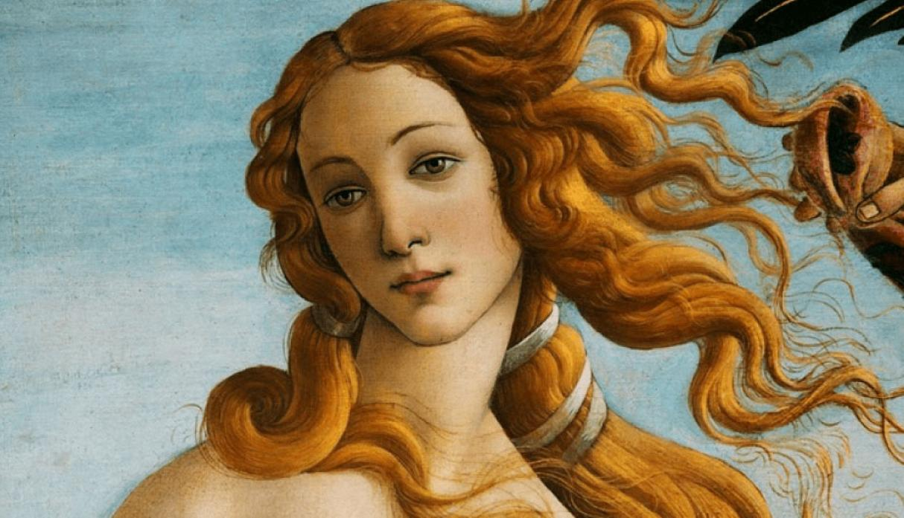
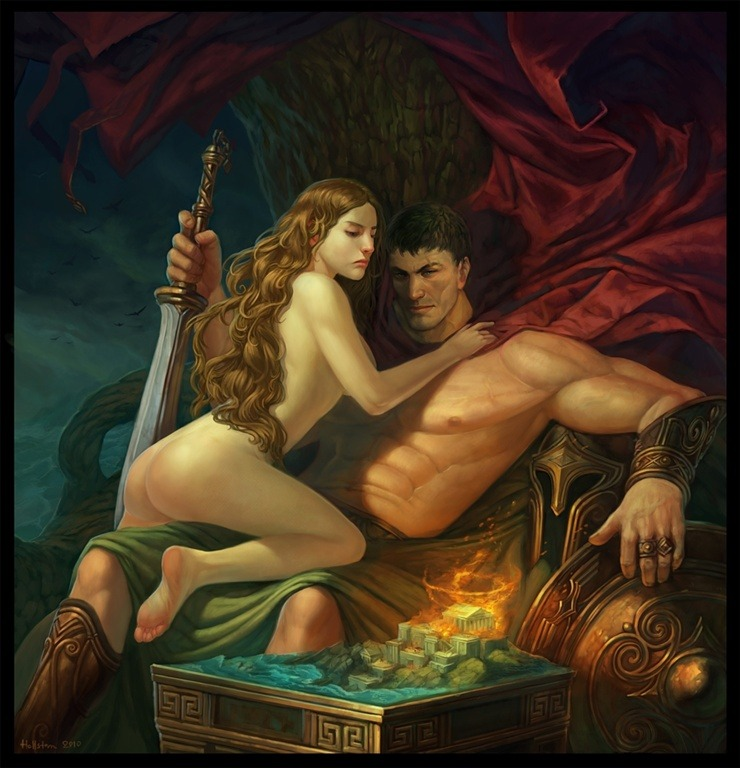

Afrodita
Afrodita (en griego antiguo, Ἀφροδίτη) es, en la mitología griega, la diosa de la belleza y el amor. Su equivalente romano es Venus. Aunque a menudo se alude a ella en la cultura moderna como «la diosa del amor», es importante señalar que antiguamente no se refería al amor en el sentido romántico sino erótico. Pese a que en la mitología estaba casada con Hefesto, tuvo otros amantes, siendo Ares su favorito.
Junto a sus hermanos, ocupaba un lugar en el panteón entre los doce dioses olímpicos. De su nombre se desprenden acepciones, como la palabra afrodisíaco, y de su nombre en romano antiguo (Venere), provienen venerar y venérea (referido a lo sexual).
Templos
- Templo de Santorini o Thera.
- Templo de Cnido, para el que se hizo la Afrodita de Cnido de Praxíteles.
- Uno
- Dos
- Tres
- Templo de Amatunte (Chipre).
- Templo de Pafos.
Matrimonio con Hefesto
El romance de Afrodita y Ares ha sido uno de las más retratadas en el arte. Debido a su inmensa belleza, Zeus temía que Afrodita fuera la causa de violencia entre los otros dioses. Por ello la casó con Hefesto, el severo, cojo («rengo») y malhumorado dios del fuego y la fragua. Otra versión de esta historia cuenta que Hera, la madre de Hefesto, lo arrojó del Olimpo al considerarlo feo y deforme. Este obtuvo su venganza atrapándola en un trono mágico y exigiendo a cambio de su liberación la mano de Afrodita. Hefesto estaba contentísimo de haberse casado con la diosa de la belleza y forjó para ella hermosa joyería, incluyendo el cesto, un cinturón que la hacía incluso más irresistible para los hombres.
Romance con Ares
La infelicidad de Afrodita con su matrimonio hizo que buscase la compañía de otros, especialmente con Ares, dios olímpico de la guerra. Hefesto fue informado del adulterio que su esposa mantenía con Ares por Helios. Planeó entonces atraparlos con una red de cadenas invisibles que había dispuesto sobre el lecho, capaz de inmovilizarlos. Ares sabía que Hefesto retornaría al hogar al salir el sol, así es que prevenidamente dispuso de su secuaz favorito, Alectrión, para que le avisara. Pero Alectrión se quedó dormido. Efectivamente, el sol salió, y las redes cayeron sobre Ares y Afrodita «en plena ocasión», y quedaron inmóviles. Hefesto enfurecido llamó a todos los demás dioses olímpicos para burlarse de ellos («las diosas se quedaron en casa, todas por vergüenza»); y contrariamente las burlas cayeron sobre Hefesto: algunos dioses adoraron la belleza de Afrodita, otros comentaron que con gusto tomarían el lugar de Ares. Hefesto no los liberó hasta que Poseidón le prometiera que Ares pagara desagravios, pero ambos escaparon tan pronto como levantó la red y no mantuvieron su promesa. Ares convirtió a Alectrión en gallo, para que nunca más se quedara dormido.
- Citas sobre Afrodira
- Cronos en mi tierra no es grande, cuando Afrodita está esculpida en oro.
C.P: 00001
Atenas, Grecia
Todos los derechos reservados ©®™
Camisas de Afrodita a tan sólo: 100.00€
No confundir el amor de los griegos con el concepto actual del amor
Fuente: https://es.wikipedia.org/wiki/Afrodita